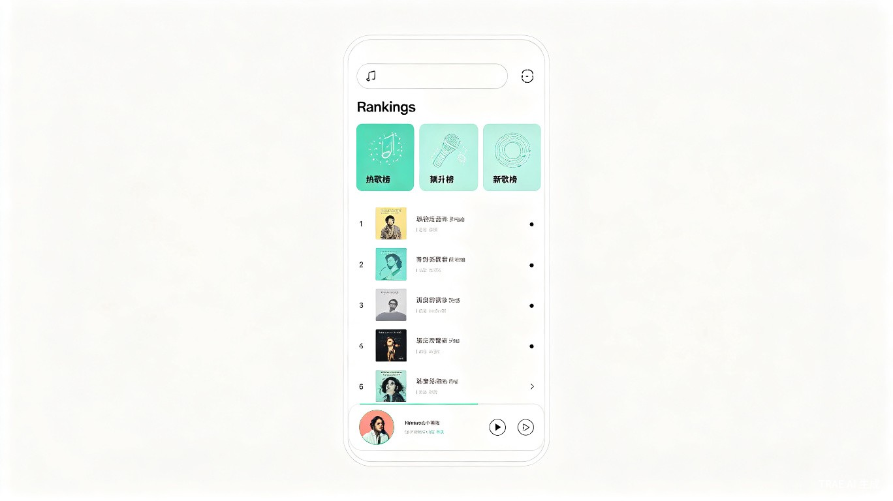
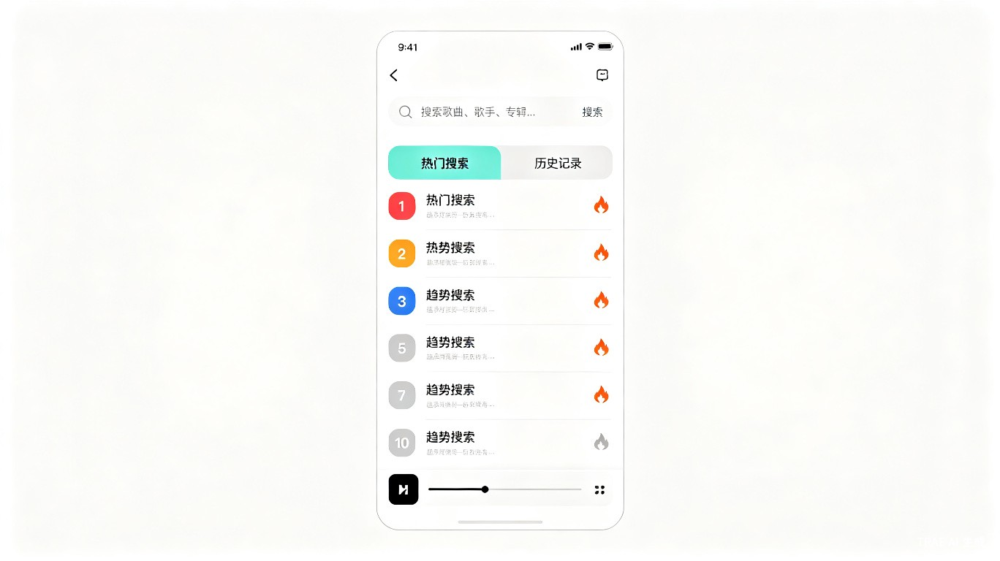
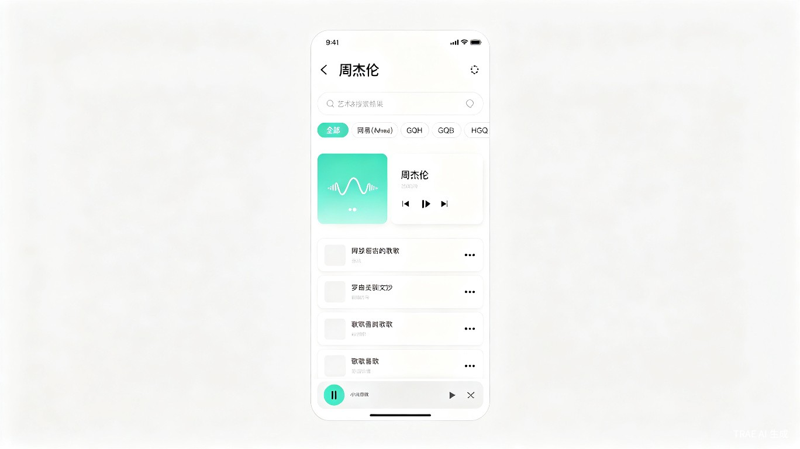
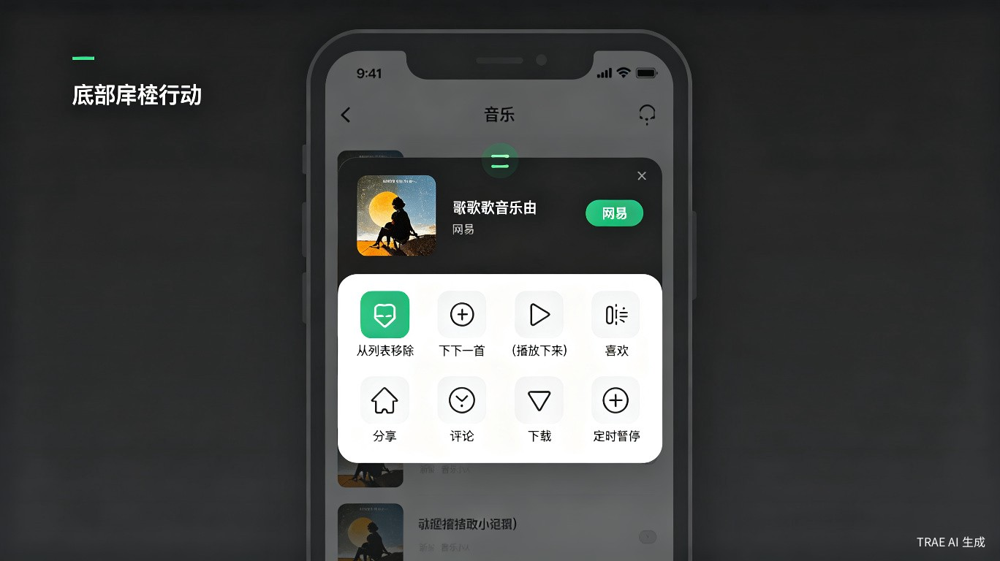
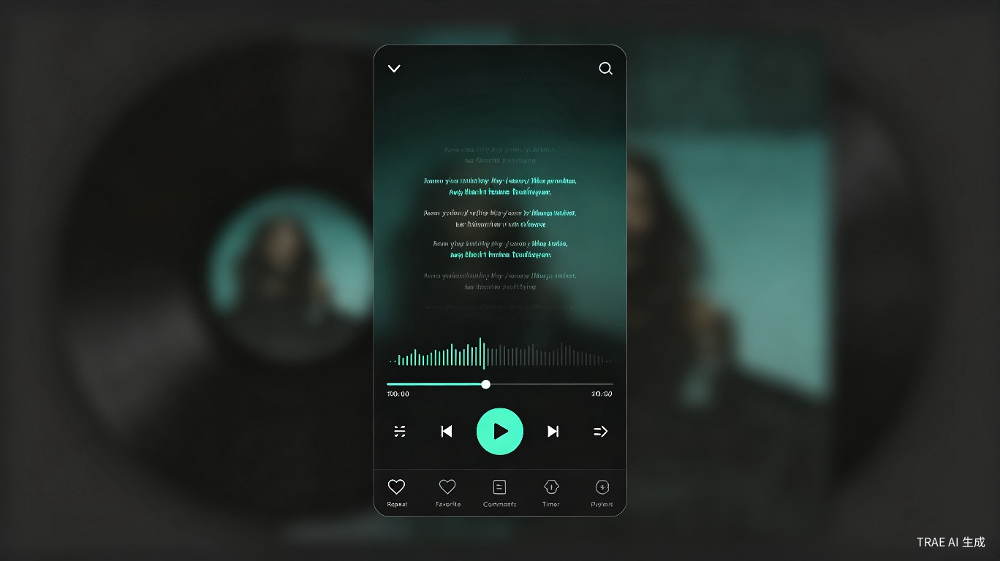
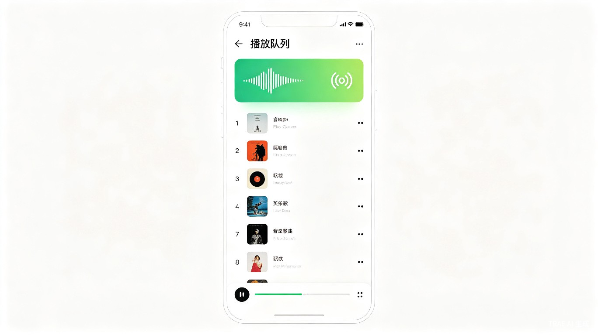
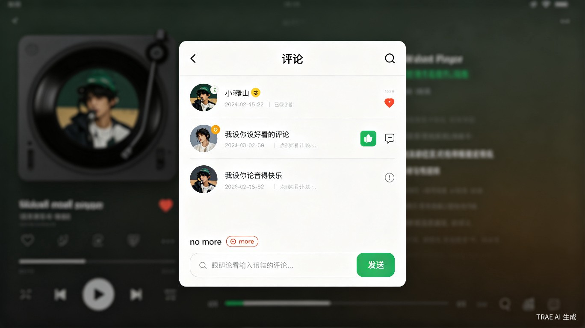
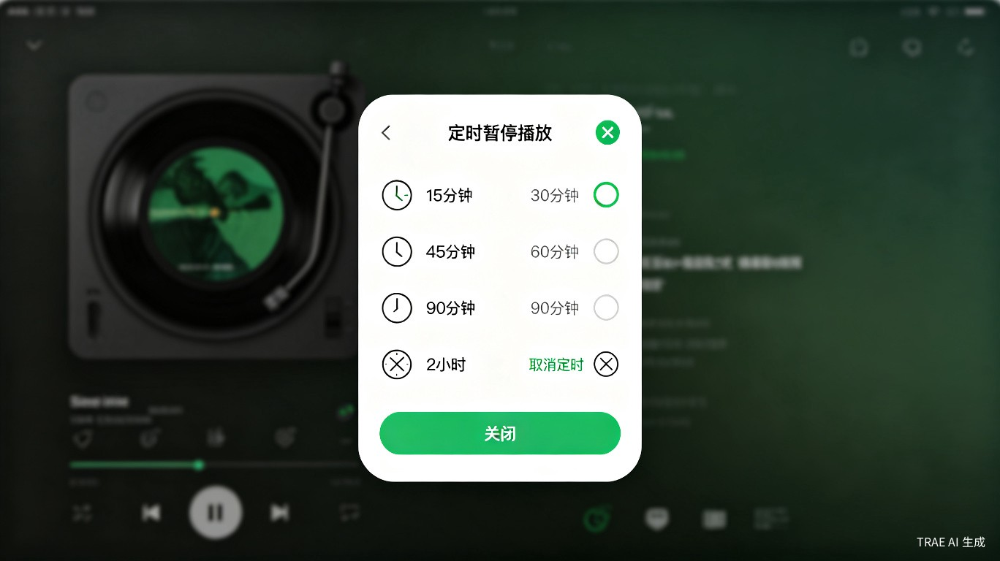

需求设计文档 v1.0
当前主流音乐平台（网易云音乐、QQ音乐等）功能繁杂、广告众多，且需要登录注册才能使用完整功能。对于只想安静听歌的个人用户而言，这些平台存在大量干扰。本产品定位为一款纯个人使用的本地音乐播放器，聚合多个音乐源的搜索结果，提供简洁、无广告、无需登录的听歌体验。
| 维度 | 描述 |
|---|---|
| 用户类型 | 个人音乐爱好者，追求简洁听歌体验 |
| 使用频率 | 每日使用，每次 30 分钟至数小时 |
| 核心诉求 | 快速找到想听的歌、沉浸式播放、离线可用 |
| 技术能力 | 普通智能手机用户，能熟练使用基础 App |
| 痛点 | 主流平台广告多、功能杂、需登录、推荐算法干扰 |
| 场景 | 描述 | 优先级 |
|---|---|---|
| 发现新歌 | 打开 App 查看排行榜，浏览热门歌曲，发现感兴趣的音乐 | P0 |
| 搜索播放 | 通过搜索栏输入歌名、歌手名或专辑名，快速找到目标歌曲并播放 | P0 |
| 沉浸听歌 | 在全屏播放器中查看同步歌词，享受沉浸式听歌体验 | P0 |
| 收藏管理 | 将喜欢的歌曲加入收藏，方便日后快速找到 | P1 |
| 离线听歌 | 下载歌曲到本地，在无网络环境下（通勤、飞行模式）播放 | P1 |
| 睡前定时 | 设置定时暂停，在入睡前自动停止播放 | P2 |
| 浏览评论 | 查看其他用户对歌曲的评论，感受社区氛围 | P2 |
| # | 模块 | 功能描述 | 优先级 |
|---|---|---|---|
| 1 | 首页排行榜 | 展示热歌榜、飙升榜、新歌榜三个维度的歌曲排行，支持浏览和直接播放 | P0 |
| 2 | 搜索功能 | 支持按歌曲名、歌手名、专辑名搜索，含热门搜索推荐和搜索历史 | P0 |
| 3 | 搜索结果页 | 展示搜索到的歌曲列表，支持按音源筛选，显示歌曲信息和操作入口 | P0 |
| 4 | 歌曲操作菜单 | 底部弹出操作面板，提供从列表移除、下一首播放、收藏、分享、评论、下载、定时暂停等操作 | P0 |
| 5 | 迷你播放器 | 全局底部常驻播放控制条，显示当前播放歌曲信息，支持暂停/播放和展开全屏 | P0 |
| 6 | 全屏播放器 | 沉浸式播放界面，含模糊专辑背景、同步歌词滚动、进度条拖拽、播放控制、收藏/评论/定时等操作 | P0 |
| 7 | 播放队列 | 查看和管理当前播放队列，支持调整顺序和移除歌曲 | P0 |
| 8 | 播放模式 | 支持列表循环、单曲循环、随机播放三种模式切换 | P0 |
| 9 | 收藏功能 | 收藏/取消收藏歌曲，收藏列表独立管理 | P1 |
| 10 | 下载管理 | 下载歌曲到本地存储，支持查看下载列表和删除已下载歌曲 | P1 |
| 11 | 评论功能 | 查看歌曲评论列表，支持点赞和回复 | P2 |
| 12 | 定时暂停 | 设置 15 分钟至 2 小时的定时暂停，到时自动停止播放 | P2 |
| 13 | 分享功能 | 将歌曲通过系统分享面板分享给其他应用或联系人 | P2 |

| 区域 | 元素 | 说明 |
|---|---|---|
| 顶部导航 | 搜索栏 | 圆角输入框，左侧音乐符号图标，占位文字"输入想要搜索的音乐"，点击跳转搜索页 |
| 排行榜区域 | 标题栏 | 左侧显示"Rankings"文字及菜单图标，右侧显示更多选项图标 |
| 排行榜区域 | 分类标签栏 | 三个标签页："热歌榜"（火焰图标，默认选中）、"飙升榜"（趋势箭头图标）、"新歌榜"（NEW 标记） |
| 歌曲列表 | 歌曲卡片 | 每首歌显示：排名序号、专辑封面缩略图、歌曲名、歌手名、三点菜单按钮 |
| 歌曲列表 | 当前播放标识 | 正在播放的歌曲卡片左侧显示音频波形动画图标，背景色为浅薄荷绿 |
| 底部 | 迷你播放器 | 全局常驻，详见第 8 节 |

| 区域 | 元素 | 说明 |
|---|---|---|
| 顶部导航 | 返回按钮 | 左侧薄荷绿返回箭头，返回上一页 |
| 顶部导航 | 搜索输入框 | 圆角输入框，左侧音符图标，占位文字"搜索歌曲、歌手、专辑..." |
| 顶部导航 | 搜索按钮 | 右侧"搜索"文字按钮，薄荷绿色，点击执行搜索 |
| 标签栏 | 热门搜索 | 带上升箭头图标，选中时薄荷绿高亮背景 |
| 标签栏 | 历史记录 | 带时钟图标，未选中时灰色文字 |
| 热门搜索列表 | 排名条目 | 序号徽章（前三名彩色渐变：红、橙、蓝；其余灰色）+ 搜索词 + 热度标签（前三名显示） |
| 底部 | 迷你播放器 | 全局常驻 |

| 区域 | 元素 | 说明 |
|---|---|---|
| 顶部导航 | 返回按钮 | 左侧薄荷绿返回箭头 |
| 顶部导航 | 页面标题 | 居中显示搜索关键词或歌手名 |
| 音源筛选栏 | 筛选标签 | 水平排列的药丸形按钮："全部"（默认选中，薄荷绿填充）、"网易"、"GQH"、"GQB"、"HGQ"等音源名称 |
| 歌曲列表 | 当前播放卡片 | 浅薄荷绿背景，左侧波形动画图标，歌曲名和歌手名均为薄荷绿色 |
| 歌曲列表 | 普通歌曲卡片 | 白色背景，显示歌曲名（黑色粗体）和歌手名（灰色），右侧三点菜单 |
| 底部 | 迷你播放器 | 全局常驻 |

| 区域 | 元素 | 说明 |
|---|---|---|
| 顶部 | 拖拽手柄 | 水平短线条，提示用户可下滑关闭 |
| 歌曲信息 | 专辑封面 | 方形圆角图片，薄荷绿边框高亮 |
| 歌曲信息 | 歌曲名 | 大号粗体文字 |
| 歌曲信息 | 来源标签 | 薄荷绿药丸形标签，显示音源名称（如"网易"） |
| 歌曲信息 | 歌手名 | 灰色次要文字 |
| 操作按钮 | 第一行 | 从列表移除、下一首播放、喜欢、分享 |
| 操作按钮 | 第二行 | 评论、下载、定时暂停 |
| 操作 | 图标 | 触发行为 | 优先级 |
|---|---|---|---|
| 从列表移除 | 列表+X | 从当前播放队列中移除该歌曲，显示 Toast 提示"已从列表移除" | P0 |
| 下一首播放 | 箭头+音符 | 将该歌曲插入到当前播放歌曲之后，显示 Toast 提示"将在当前歌曲后播放" | P0 |
| 喜欢 | 心形 | 收藏/取消收藏该歌曲，图标在空心和实心之间切换，显示 Toast 反馈 | P1 |
| 分享 | 分享节点 | 调起系统分享面板，分享歌曲名和歌手信息 | P2 |
| 评论 | 气泡 | 打开评论弹窗（详见第 11 节） | P2 |
| 下载 | 下载箭头 | 开始下载该歌曲到本地，已下载则显示"已下载"状态 | P1 |
| 定时暂停 | 计时器 | 打开定时暂停设置面板（详见第 12 节） | P2 |
迷你播放器是全局底部常驻组件，在除全屏播放器外的所有页面中始终显示。当有歌曲正在播放或暂停时展示，无播放内容时隐藏。
| 位置 | 元素 | 说明 |
|---|---|---|
| 最左侧 | 专辑封面 | 圆形缩略图，带装饰性边框 |
| 左侧 | 歌手名 | 当前播放歌曲的歌手名，文字过长时跑马灯滚动 |
| 中间 | 歌曲信息 | 歌曲名 - 歌手名（粗体显示） |
| 右侧 | 播放/暂停按钮 | 圆形按钮，显示播放或暂停图标 |
| 最右侧 | 播放队列按钮 | 音符+列表图标，点击打开播放队列页面 |

| 区域 | 元素 | 说明 |
|---|---|---|
| 顶部导航 | 收起按钮 | 左侧下箭头，点击收起回迷你播放器 |
| 顶部导航 | 分享按钮 | 右侧分享图标，调起系统分享面板 |
| 中央区域 | 歌词显示 | 卡拉 OK 式同步滚动歌词，当前行薄荷绿高亮放大，其余行为白色半透明 |
| 进度区域 | 进度条 | 水平进度条，薄荷绿填充已播放部分，圆形拖拽手柄 |
| 进度区域 | 时间显示 | 左侧显示当前播放时间，右侧显示总时长 |
| 主控制栏 | 循环模式 | 列表循环/单曲循环/随机播放图标切换 |
| 主控制栏 | 上一首 | 白色圆形按钮，黑色上一首图标 |
| 主控制栏 | 播放/暂停 | 大号薄荷绿圆形按钮，白色播放/暂停图标 |
| 主控制栏 | 下一首 | 白色圆形按钮，黑色下一首图标 |
| 主控制栏 | 播放队列 | 列表+播放图标，点击打开播放队列 |
| 次操作栏 | 收藏 | 心形图标，空心/实心切换 |
| 次操作栏 | 评论 | 气泡图标，点击打开评论面板 |
| 次操作栏 | 定时 | 计时器图标，点击打开定时暂停面板 |
| 次操作栏 | 更多 | 三点图标，点击弹出更多操作菜单 |

| 区域 | 元素 | 说明 |
|---|---|---|
| 顶部导航 | 返回按钮 | 左侧返回箭头 |
| 顶部导航 | 页面标题 | 居中显示"播放队列" |
| 队列列表 | 当前播放歌曲 | 浅薄荷绿背景高亮，左侧波形动画图标 |
| 队列列表 | 待播放歌曲 | 显示序号、专辑封面、歌曲名、歌手名、三点菜单 |
| 底部 | 迷你播放器 | 全局常驻 |

| 区域 | 元素 | 说明 |
|---|---|---|
| 顶部 | 标题栏 | 居中"评论"标题，右侧刷新图标和关闭按钮 |
| 评论列表 | 评论卡片 | 头像（圆形）、用户名、评论内容、发布时间+地区、"回复"按钮、点赞/踩按钮 |
| 底部 | 结束标识 | "没有更多了"分隔线提示 |
| 底部 | 护眼提示 | 圆角药丸形提示"过度用眼，请注意用眼时间" |
| 底部 | 评论输入框 | 占位文字"善语结善缘，恶语伤人心"，右侧绿色圆形发送按钮 |

| 区域 | 元素 | 说明 |
|---|---|---|
| 顶部 | 标题 | 居中"定时暂停播放"粗体标题 |
| 顶部 | 关闭按钮 | 右上角薄荷绿圆形 X 按钮 |
| 选项列表 | 时间选项 | 15 分钟、30 分钟、45 分钟、60 分钟、90 分钟、2 小时，每项前有秒表图标 |
| 选项列表 | 取消定时 | 带斜杠秒表图标，点击取消当前激活的定时器 |
| 底部 | 关闭按钮 | 全宽薄荷绿圆角按钮，白色"关闭"文字 |
用户可以将喜欢的歌曲加入收藏列表，方便快速找到和播放。收藏数据存储在本地，无需登录同步。
支持将在线歌曲下载到本地存储，在无网络环境下也能播放已下载的歌曲。
| 模式 | 图标 | 行为描述 |
|---|---|---|
| 列表循环 | 循环箭头 | 按播放队列顺序依次播放，队列最后一首播完后回到第一首继续循环 |
| 单曲循环 | 循环箭头+数字1 | 重复播放当前歌曲，不自动切换到下一首 |
| 随机播放 | 交叉箭头 | 从播放队列中随机选择下一首歌曲播放 |
将歌曲信息通过系统原生分享面板分享到其他应用。
| 实体 | 字段 | 说明 |
|---|---|---|
| Song（歌曲） | id | 歌曲唯一标识 |
| title | 歌曲名称 | |
| artist | 歌手名称 | |
| album | 专辑名称 | |
| cover_url | 专辑封面 URL | |
| audio_url | 音频文件 URL | |
| source | 音源标识（如 netease、gqh 等） | |
| duration | 歌曲时长（秒） | |
| Lyric（歌词） | song_id | 关联歌曲 ID |
| content | 歌词文本内容（LRC 格式） | |
| offset | 时间偏移量（毫秒） | |
| source | 歌词来源 | |
| Favorite（收藏） | song_id | 关联歌曲 ID |
| created_at | 收藏时间 | |
| song_snapshot | 歌曲信息快照（JSON，防止源数据变更） | |
| source | 音源标识 | |
| Download（下载） | song_id | 关联歌曲 ID |
| local_path | 本地存储路径 | |
| file_size | 文件大小（字节） | |
| downloaded_at | 下载完成时间 | |
| SearchHistory（搜索历史） | keyword | 搜索关键词 |
| searched_at | 搜索时间 | |
| result_count | 搜索结果数量 | |
| PlayQueue（播放队列） | songs | 有序歌曲 ID 列表 |
| current_index | 当前播放索引 | |
| play_mode | 播放模式（loop/single/shuffle） | |
| current_position | 当前播放进度（毫秒） | |
| Timer（定时器） | target_time | 目标暂停时间戳 |
| duration_minutes | 设定时长（分钟） | |
| is_active | 是否激活 |
| 层 | 推荐方案 | 说明 |
|---|---|---|
| 跨平台框架 | Flutter / React Native | 一套代码同时支持 Android 和 iOS |
| 音频播放 | just_audio / ExoPlayer | 支持流媒体和本地文件播放，支持后台播放 |
| 本地存储 | SQLite / Hive | 存储收藏、下载记录、搜索历史、播放队列 |
| 网络请求 | Dio / Retrofit | 搜索 API 请求、歌曲信息获取、评论获取 |
| 状态管理 | Provider / Riverpod / Bloc | 管理播放状态、UI 状态、数据流 |
| 歌词解析 | 自定义 LRC 解析器 | 解析标准 LRC 格式歌词文件，实现时间轴同步 |
| 后台播放 | audio_service / WorkManager | 支持锁屏播放控制、通知栏控制 |
| 下载管理 | flutter_downloader / DownloadManager | 支持断点续传、进度回调 |
| 指标 | 要求 |
|---|---|
| App 冷启动时间 | 不超过 2 秒 |
| 搜索响应时间 | 不超过 3 秒（含网络请求） |
| 歌曲播放缓冲 | 点击后 1 秒内开始播放 |
| 页面切换 | 动画流畅，帧率不低于 60fps |
| 歌词同步精度 | 误差不超过 100ms |
| 内存占用 | 正常运行不超过 150MB |
| 平台 | 最低版本 |
|---|---|
| Android | Android 7.0 (API 24) 及以上 |
| iOS | iOS 13.0 及以上 |
| 场景 | 处理方式 |
|---|---|
| 网络不可用 | 提示"网络连接不可用"，已下载歌曲仍可播放 |
| 播放失败 | 尝试重试 1 次，仍失败则提示"播放失败，请稍后重试"，自动跳到下一首 |
| 搜索无结果 | 显示空状态页面，提供搜索建议 |
| 下载失败 | 提示"下载失败"，支持手动重试 |
| 存储空间不足 | 提示"存储空间不足，请清理后重试" |
| 歌词解析失败 | 显示"暂无歌词"提示，不影响播放 |
| 阶段 | 目标 | 核心功能 | 预计周期 |
|---|---|---|---|
| MVP | 核心听歌体验可用 | 搜索歌曲、搜索结果列表、歌曲播放、迷你播放器、全屏播放器（含歌词同步）、播放队列、播放模式切换、音源筛选 | 3-4 周 |
| V1.1 | 个人数据管理 | 收藏功能、下载管理、搜索历史、排行榜页面完善、歌曲操作菜单 | 2 周 |
| V1.2 | 体验增强 | 评论功能、定时暂停、分享功能、后台播放优化、锁屏控制、蓝牙控制 | 2 周 |
| V2.0 | 体验打磨 | 播放动画优化、歌词翻译、音质选择、播放速度调节、UI 细节打磨 | 按需迭代 |